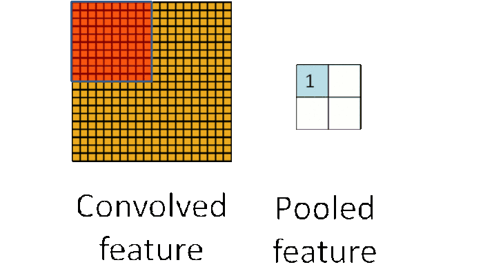

1.基本架构
一个CNN网络一般都是卷积、池化、卷积、池化，…，全连接的模式。

最简单的就是
卷积层（特征提取）→激活函数（为了加入非线性因素）→池化层（采样层，用于压缩数据）→全连接层（用于分类）→反向传播算法，前馈神经网络等调整卷积核参数
简单的神经元

一个三层神经网络结构

上图中最左边的原始输入信息称之为输入层，最右边的神经元称之为输出层（上图中输出层只有一个神经元），中间的叫隐藏层。
2.卷积层
用一张动态卷积图来说明下卷积的原理

卷积公式：
$$
\displaystyle \int^{\infty}_{-\infty}{f(τ)g(x-τ)dτ}
$$
g(x)——卷积核
物理意义：系统的某一时刻的输出是由多个输入同时作用（叠加）而成的
例子：
$$
\frac{\partial f}{\partial x} = f(x+1)-f(x)
$$
$$
\frac{\partial^2 f}{\partial x^2} = f(x+1)+f(x-1)-2f(x)
$$
$$
\overrightarrow{\nabla}^2f=\frac{\partial^2 f}{\partial x^2}+\frac{\partial^2 f}{\partial y^2}=f(x+1,y)+f(x-1,y)+f(x,y+1)+f(x,y-1)-4f(x,y)
$$
$$
\overrightarrow{\nabla}^2f——拉普拉斯算子，强调图像中的灰度突变，可用于突出图像边缘
$$
$$
\downarrow\downarrow
$$
$$
\left[ \begin{matrix} 0 &1 &0 \1 & -4 &1 \ 0 & 1 & 0\end{matrix} \right]
$$
$$
\downarrow\downarrow
$$
作为g(x)与原图像f(x)卷积，可以用来锐化图像

从这些案例中可以看出
- 原始图像通过与卷积核的数学运算，可以提取出图像的某些指定特征（features)
- 不同卷积核，提取的特征也是不一样的
- 即使提取的特征一样，不同的卷积核，效果也不一样
而CNN实际上也就是一个不断提取特征，进行特征选择，然后进行分类的过程，卷积在CNN里，就是充当前排步兵，首先对原始图像进行特征提取
上动图中可以看出，一个5×5的原图与一个3×3的核（图中深红色部分）进行卷积，得到一个3×3的特征图。（此时，stride=2，padding= 1）
stride，一般称为步长。表示卷积核在图片上移动的格数。stride=1时，代表每次移动一格；stride=2时，则每次移动两格。有如下公式，
$$
OutputSize=\frac{PictureSize−Kernel}{SizeStride}+1
$$
padding，即外围补0用以扩展图片。此时，
$$
OutputSize=\frac{PictureSize+2×Padding−KernelSize}{SizeStride}+1
$$
一个3 * 3的source经过一个3 * 3的卷积核，特征映射成了一个1 * 1的特征值
卷积核代表了对应的权重
卷积核和图像进行点乘就代表卷积核里的权重单独对应到相应位置进行作用
$$
\displaystyle \sum^{}_{i}{w_ix_i=output}
$$
在CNN中卷积核的权重局部参数共享，通过反向传播来不断优化更新自己权重。
3.激活函数
由于线性函数具有可加性和齐次性
任意线性函数连接都可以等价为一个单一线性函数
所以线性神经网络没法解决非线性问题
我们就需要把线性神经网络，转成非线性的
我们从最简单的神经网络 Y = W×X +B入手，然后变成最简单的非线性神经网络Y = W×X×X+B
这是一个普通Y = X×X 的表达式

Y = W×X×X+B 经过一系列运算（理想的）
我们得到了如下：

变成曲线后，好像可以把这两类区分开诶

我们需要算出输出误差error (output Y - target Y) 来更新权值
如果我们的神经网络函数是线性的，那么它的导数就是个常数，意味着梯度和X 无关了，也就是和输入无关了
我们在做反向传播的时候，梯度的改变也变成常数，和输入的改变X(delta(x)) 无关了
常见的激活函数

sigmoid 只会输出正数，以及靠近0的输出变化率最大，tanh和sigmoid不同的是，tanh输出可以是负数，ReLu是输入只能大于0,如果你输入含有负数，ReLu就不适合，如果你的输入是图片格式，ReLu就挺常用的。
其实卷积层的输出，是特征提取后的，特征值越大，说明特征越明显，特征值小的就可以用激活函数滤去了。我对激活函数的作用理解差不多就是这样。
取其精华去其糟粕。
4.池化层

池化可以将一幅大的图像缩小，同时又保留其中的重要信息
它就是将输入图像进行缩小，减少像素信息，只保留重要信息
通常情况下，池化都是2×2大小，比如对于max-pooling来说，就是取输入图像中2×2大小的块中的最大值，作为结果的像素值，相当于将原始图像缩小了4倍(注：同理，对于average-pooling来说，就是取2×2大小块的平均值作为结果的像素值)

因为最大池化（max-pooling）保留了每一个小块内的最大值，所以它相当于保留了这一块最佳的匹配结果（因为值越接近1表示匹配越好）
这也就意味着它不会具体关注窗口内到底是哪一个地方匹配了，而只关注是不是有某个地方匹配上了
这也就能够看出，CNN能够发现图像中是否具有某种特征，而不用在意到底在哪里具有这种特征
通过加入池化层，可以很大程度上减少计算量，降低机器负载。
5.全连接层


全连接层也能够有很多个，如下：

【综合上述所有结构】
这一整个过程，从前到后，被称作”前向传播“，得到一组输出，然后通过反向传播来不断纠正错误，进行学习。

6.反向传播
此处数学原理可以参见：深度学习 —— 反向传播理论推导.
反向传播可分为四部分，分别是前向传导、损失函数、后向传导，以及权重更新
在前向传导中，选择一张训练图像数组并让它通过整个网络
在第一个训练样例上，由于所有的权重或者过滤器值都是随机初始化的，输出可能会是 [.1 .1 .1 .1 .1 .1 .1 .1 .1 .1]，即一个不偏向任何数字的输出
损失函数有许多种定义方法，常见的一种是 MSE （均方误差）
$$
E_{total}=\sum\frac{1}{2}(target-output)^2
$$
我们需要找出是哪部分输入（例子中的权重）直接导致了网络的损失（或错误）
这是一个 dL/dW 的数学等式，W 是特定层级的权重。我们接下来要做的是在网络中进行后向传导，测定出是哪部分权重导致了最大的损失，寻找调整方法并减少损失。一旦计算出该导数，将进行最后一步也就是权重更新。所有的过滤器的权重将会更新，以便它们顺着梯度方向改变。
$$
w = w_i-\eta\frac{dL}{dW}
$$
$$
w = 权重\quad w_i=初始权重\quad\eta=学习速率
$$
学习速率是一个由程序员决定的参数。高学习速率意味着权重更新的动作更大，因此可能该模式将花费更少的时间收敛到最优权重。然而，学习速率过高会导致跳动过大，不够准确以致于达不到最优点。


对于每个特征像素和投票权重，将其上下调整一下，看看错误如何变化
我们需要设置的参数
卷积层
卷积层数目
卷积层大小
池化层
窗口大小
补零数
全连接层
全连接层数目
样本